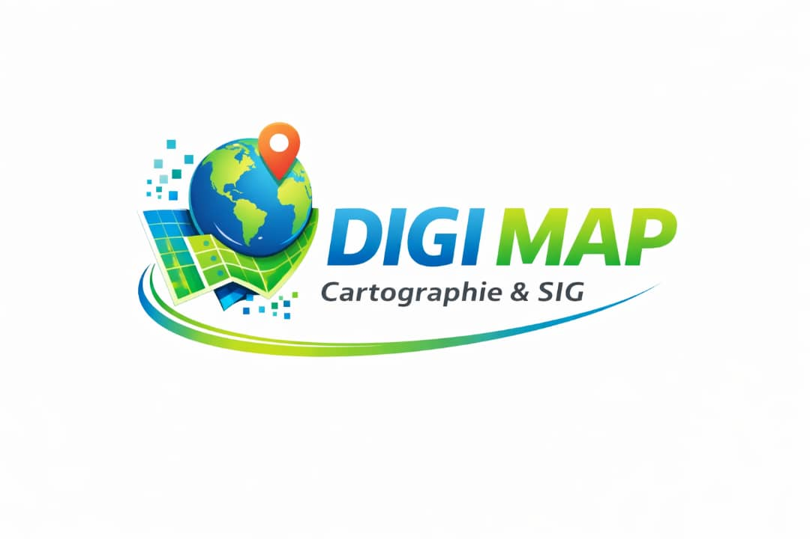

Programme professionnel de certification en Cartographie Numérique & SIG. Développez des compétences pratiques et actionnables en géomatique, analyse spatiale et sémiologie graphique à travers des cas d'études réels.
Sélectionnez le niveau en adéquation avec vos ambitions techniques et vos objectifs de carrière 🚀
Initiation complète à la cartographie numérique et fondamentaux des systèmes d'information géographique.
Approfondissez vos acquis via des modélisations spatiales avancées et la cartographie thématique.
Conception de projets complexes, gestion de bases de données et automatisation géomatique.
Apprentissage orienté projets s'appuyant sur de vraies données géographiques du secteur.
Valorisez vos compétences techniques via une certification professionnelle reconnue.
Maîtrisez les logiciels SIG open-source et propriétaires les plus plébiscités en entreprise.
Des compétences clés applicables à l'environnement, l'urbanisme, l'agriculture et le transport.
À l'issue de votre cursus DIGIMAP, vous disposerez des acquis pour :